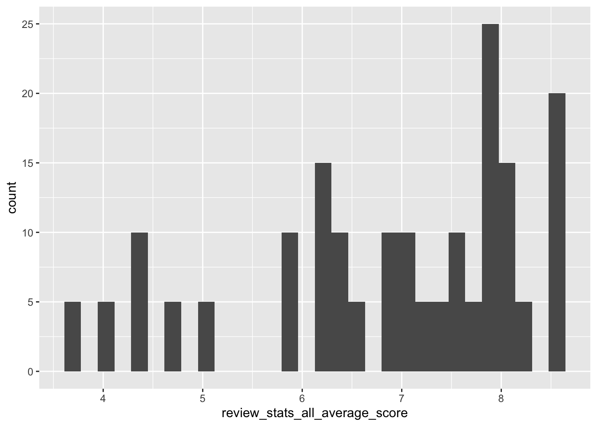

Welcome to my attempt at doing Tidy Tuesday. This week’s dataset is looking at pizza places.
Load the necessary packages.
Load the data for analysis.
## Parsed with column specification:
## cols(
## polla_qid = col_double(),
## answer = col_character(),
## votes = col_double(),
## pollq_id = col_double(),
## question = col_character(),
## place = col_character(),
## time = col_double(),
## total_votes = col_double(),
## percent = col_double()
## )## Parsed with column specification:
## cols(
## .default = col_double(),
## name = col_character(),
## address1 = col_character(),
## city = col_character(),
## country = col_character()
## )## See spec(...) for full column specifications.## Parsed with column specification:
## cols(
## name = col_character(),
## address = col_character(),
## city = col_character(),
## country = col_character(),
## province = col_character(),
## latitude = col_double(),
## longitude = col_double(),
## categories = col_character(),
## price_range_min = col_double(),
## price_range_max = col_double()
## )I want to look at the data to see what I’m working with.
## # A tibble: 6 x 22
## name address1 city zip country latitude longitude price_level
## <chr> <chr> <chr> <dbl> <chr> <dbl> <dbl> <dbl>
## 1 Pugs… 590 E 1… Bronx 10458 US 40.9 -73.9 1
## 2 Will… 265 Uni… Broo… 11211 US 40.7 -74.0 1
## 3 99 C… 473 Lex… New … 10017 US 40.8 -74.0 1
## 4 Nino… 39 W 46… New … 10036 US 40.8 -74.0 2
## 5 La P… 31 E 20… New … 10003 US 40.7 -74.0 2
## 6 La G… 382 8th… New … 10001 US NA NA 1
## # … with 14 more variables: provider_rating <dbl>,
## # provider_review_count <dbl>, review_stats_all_average_score <dbl>,
## # review_stats_all_count <dbl>, review_stats_all_total_score <dbl>,
## # review_stats_community_average_score <dbl>,
## # review_stats_community_count <dbl>,
## # review_stats_community_total_score <dbl>,
## # review_stats_critic_average_score <dbl>,
## # review_stats_critic_count <dbl>,
## # review_stats_critic_total_score <dbl>,
## # review_stats_dave_average_score <dbl>, review_stats_dave_count <dbl>,
## # review_stats_dave_total_score <dbl>## # A tibble: 6 x 10
## name address city country province latitude longitude categories
## <chr> <chr> <chr> <chr> <chr> <dbl> <dbl> <chr>
## 1 Shot… 4203 E… Sher… US AR 34.8 -92.2 Pizza,Res…
## 2 Sauc… 25 E C… Phoe… US AZ 33.5 -112. Pizza,Piz…
## 3 Mios… 3703 P… Cinc… US OH 39.1 -84.4 Restauran…
## 4 Hung… 30495 … Madi… US MI 42.5 -83.1 Pizza,Car…
## 5 Spar… 3600 E… Balt… US MD 39.3 -76.6 Pizza,Ame…
## 6 Spar… 3600 E… Balt… US MD 39.3 -76.6 Pizza,Ame…
## # … with 2 more variables: price_range_min <dbl>, price_range_max <dbl>## # A tibble: 6 x 9
## polla_qid answer votes pollq_id question place time total_votes percent
## <dbl> <chr> <dbl> <dbl> <chr> <chr> <dbl> <dbl> <dbl>
## 1 2 Excel… 0 2 How was… Pizz… 1.34e9 13 0
## 2 2 Good 6 2 How was… Pizz… 1.34e9 13 0.462
## 3 2 Avera… 4 2 How was… Pizz… 1.34e9 13 0.308
## 4 2 Poor 1 2 How was… Pizz… 1.34e9 13 0.0769
## 5 2 Never… 2 2 How was… Pizz… 1.34e9 13 0.154
## 6 3 Excel… 1 3 How was… Maff… 1.35e9 7 0.143I want to merge the tables so that the places column of the pizza_jared matches up with the name column of the pizza_barstool.
## # A tibble: 6 x 30
## name address1 city zip country latitude longitude price_level
## <chr> <chr> <chr> <dbl> <chr> <dbl> <dbl> <dbl>
## 1 Will… 265 Uni… Broo… 11211 US 40.7 -74.0 1
## 2 Will… 265 Uni… Broo… 11211 US 40.7 -74.0 1
## 3 Will… 265 Uni… Broo… 11211 US 40.7 -74.0 1
## 4 Will… 265 Uni… Broo… 11211 US 40.7 -74.0 1
## 5 Will… 265 Uni… Broo… 11211 US 40.7 -74.0 1
## 6 Litt… 55 W 45… New … 10036 US 40.8 -74.0 1
## # … with 22 more variables: provider_rating <dbl>,
## # provider_review_count <dbl>, review_stats_all_average_score <dbl>,
## # review_stats_all_count <dbl>, review_stats_all_total_score <dbl>,
## # review_stats_community_average_score <dbl>,
## # review_stats_community_count <dbl>,
## # review_stats_community_total_score <dbl>,
## # review_stats_critic_average_score <dbl>,
## # review_stats_critic_count <dbl>,
## # review_stats_critic_total_score <dbl>,
## # review_stats_dave_average_score <dbl>, review_stats_dave_count <dbl>,
## # review_stats_dave_total_score <dbl>, polla_qid <dbl>, answer <chr>,
## # votes <dbl>, pollq_id <dbl>, question <chr>, time <dbl>,
## # total_votes <dbl>, percent <dbl>As I look at it, I’m wondering if the question variable is necessary. If it’s all the same “How was …” then that’s redudant and can be removed. The time and poll_ID I’m not too interested in.
## # A tibble: 22 x 1
## question
## <chr>
## 1 How was Williamsburg Pizza?
## 2 How was Little Italy Pizza?
## 3 How was Steve's Pizza?
## 4 How was Girello?
## 5 How was 5 Boroughs Pizza?
## 6 How was Saluggi's?
## 7 How was Artichoke Basille's Pizza?
## 8 How was Bleecker Street Pizza?
## 9 How was Joe's Pizza?
## 10 How was Champion Pizza?
## # … with 12 more rowsThe questions are all the same so I’m just going to remove the variables I’m not interested in.
pizza_clean <- pizza %>%
select(-c(pollq_id, polla_qid, question, time, latitude, longitude, country, zip, address1))
pizza_clean %>%
select(name) %>%
distinct()## # A tibble: 22 x 1
## name
## <chr>
## 1 Williamsburg Pizza
## 2 Little Italy Pizza
## 3 Steve's Pizza
## 4 Girello
## 5 5 Boroughs Pizza
## 6 Saluggi's
## 7 Artichoke Basille's Pizza
## 8 Bleecker Street Pizza
## 9 Joe's Pizza
## 10 Champion Pizza
## # … with 12 more rows## Classes 'spec_tbl_df', 'tbl_df', 'tbl' and 'data.frame': 180 obs. of 21 variables:
## $ name : chr "Williamsburg Pizza" "Williamsburg Pizza" "Williamsburg Pizza" "Williamsburg Pizza" ...
## $ city : chr "Brooklyn" "Brooklyn" "Brooklyn" "Brooklyn" ...
## $ price_level : num 1 1 1 1 1 1 1 1 1 1 ...
## $ provider_rating : num 3 3 3 3 3 4 4 4 4 4 ...
## $ provider_review_count : num 281 281 281 281 281 433 433 433 433 433 ...
## $ review_stats_all_average_score : num 7.77 7.77 7.77 7.77 7.77 ...
## $ review_stats_all_count : num 27 27 27 27 27 13 13 13 13 13 ...
## $ review_stats_all_total_score : num 210 210 210 210 210 ...
## $ review_stats_community_average_score: num 7.74 7.74 7.74 7.74 7.74 ...
## $ review_stats_community_count : num 26 26 26 26 26 12 12 12 12 12 ...
## $ review_stats_community_total_score : num 201 201 201 201 201 ...
## $ review_stats_critic_average_score : num 0 0 0 0 0 0 0 0 0 0 ...
## $ review_stats_critic_count : num 0 0 0 0 0 0 0 0 0 0 ...
## $ review_stats_critic_total_score : num 0 0 0 0 0 0 0 0 0 0 ...
## $ review_stats_dave_average_score : num 8.6 8.6 8.6 8.6 8.6 4.2 4.2 4.2 4.2 4.2 ...
## $ review_stats_dave_count : num 1 1 1 1 1 1 1 1 1 1 ...
## $ review_stats_dave_total_score : num 8.6 8.6 8.6 8.6 8.6 4.2 4.2 4.2 4.2 4.2 ...
## $ answer : chr "Excellent" "Good" "Average" "Poor" ...
## $ votes : num 13 19 6 1 0 2 4 5 0 2 ...
## $ total_votes : num 39 39 39 39 39 13 13 13 13 13 ...
## $ percent : num 0.3333 0.4872 0.1538 0.0256 0 ...There are 22 distinct pizza places that over lap between the two datasets.
I want to get an idea about how the reviews spread out.
## Warning: Ignoring unknown parameters: binwidth, bins, pad## `stat_bin()` using `bins = 30`. Pick better value with `binwidth`.## `stat_bin()` using `bins = 30`. Pick better value with `binwidth`.
pizza_clean %>%
ggplot(aes(name, review_stats_all_count)) +
geom_point() +
theme(axis.text.x = element_text(angle=60, hjust=1))It looks like most of the data is from New York. So I’m just going to focus on that city, and remove the rest of the cities. I’m not finding the price level to be very interesting either. So I’m going to remove that as well. The are a couple places that have high review counts. But that’ll be good to just keep in mind.
nyc_pizza <- subset(pizza_clean, city == "New York")
nyc_pizza <- nyc_pizza %>%
select(-c(price_level, review_stats_all_count))Ok, now I want to actually kind look at the data. So I’m going to see of the restaurants left what their ratings are.
nyc_pizza %>%
ggplot(aes(x = reorder(name, review_stats_all_average_score), y = review_stats_all_average_score)) +
geom_point() +
theme(axis.text.x = element_text(angle=60, hjust=1))Now I want to see plot the reviews agaisnt each other to see if they match up well.
nyc_pizza %>%
ggplot(aes(review_stats_critic_average_score, review_stats_community_average_score)) +
geom_point()nyc_pizza %>%
ggplot(aes(review_stats_dave_average_score, review_stats_community_average_score, color = provider_rating, size = (review_stats_community_count + review_stats_dave_count))) +
guides(size = guide_legend(title = "Total Count"),
color = guide_legend(title = "Rating")) +
geom_point() +
xlim(0, 10) +
ylim(0, 10) +
labs(title = "Average Ratings", x = "Dave's Score", y = "Community Score") Uh. Well I guess the critic reviews don’t really cover the data set that I’m looking at. But there is a bit of overlab for the dave ratings and the community scores. I would fit a line to this to see the deviation between them in the future.